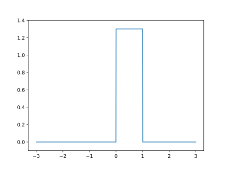
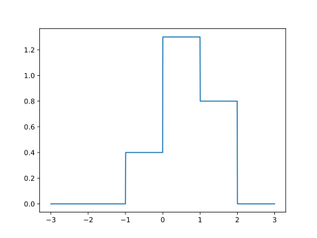
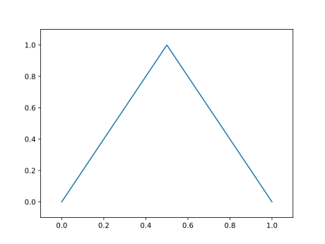
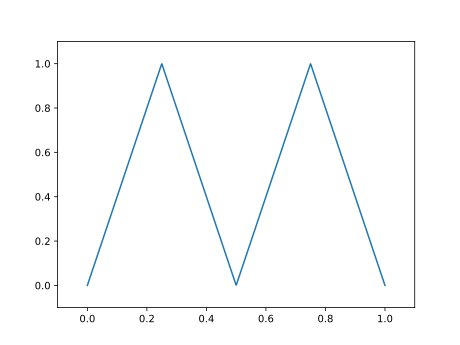
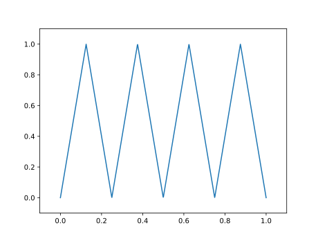
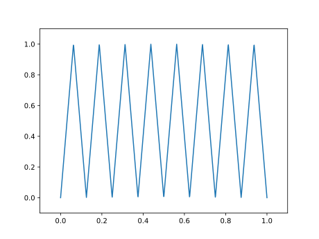
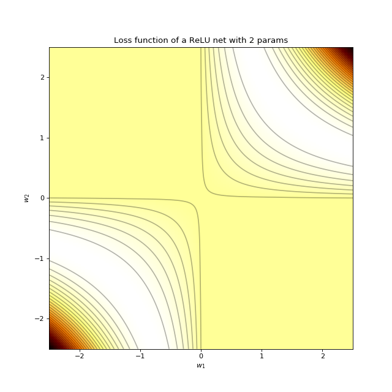
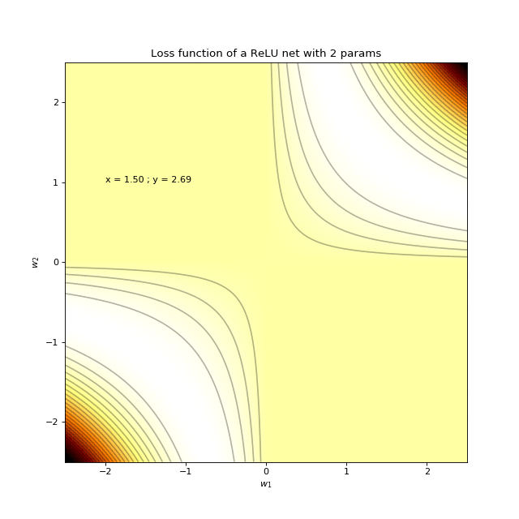
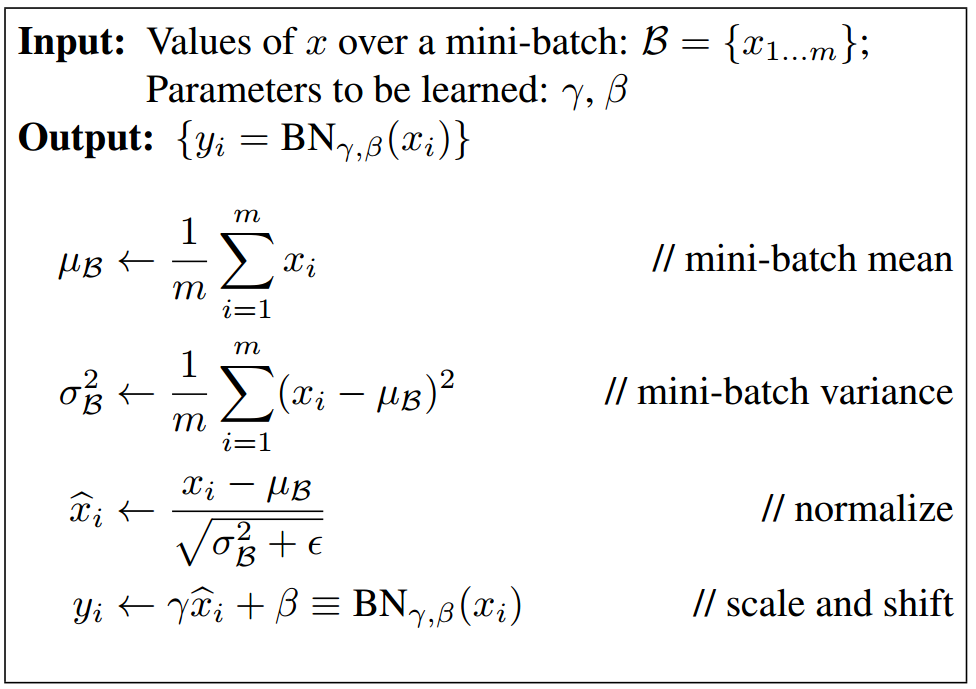

class: center, middle # Learning with Deep Networks: Expressivity, Optimization & Generalization Charles Ollion - Olivier Grisel .affiliations[    ] --- # Decomposition of the Error .left-column[ $$\begin{eqnarray} E\_n(f\_n) - E(f^\star) & = & E(f\_{\mathcal{F}}^\star) - E(f^\star) \\\\ & + & E\_n(f\_n) - E(f\_{\mathcal{F}}^\star) \end{eqnarray}$$ ] .right-column[.small[ - Approximation error - Estimation error ]] .reset-column[ ] -- Ground truth function: $f^\star$ -- Hypothesis class: $\mathcal{F}$, best hypothesis: $f\_\mathcal{F}^\star \in \mathcal{F}$ -- Expected Risk: $E(f) = \int l(f(x), y).dP(x, y)$ (but $P$ is unknown) -- Empirical Risk: $E_n(f) = \frac{1}{n} \sum_i l(f(x\_i), y\_i)$ -- Empirical Risk Minimization: $$ f\_n = argmin\_{f \in \mathcal{F}} E\_n(f) $$ ??? **Questions**: how is the approximation error impacted by: - a larger hypothesis class $\mathcal{F}$? **Questions**: how is the estimation error impacted by: - a larger training set $n$? - a larger hypothesis class $\mathcal{F}$? --- # Decomposition of the Error .left-column[ $$\begin{eqnarray} E\_n(\tilde{f}\_n) - E(f^\star) & = & E(f\_{\mathcal{F}}^\star) - E(f^\star) \\\\ & + & E\_n(f\_n) - E(f\_{\mathcal{F}}^\star) \\\\ & + & E\_n(\tilde{f}\_n) - E\_n(f\_n) \end{eqnarray}$$ ] .right-column[.small[ - Approximation error - Estimation error - Optimization error ]] .reset-column[ ] .footnote.small[ Learning using Large Datasets, L. Bottou & O. Bousquet, 2008. ] -- Computing $argmin\_{f \in \mathcal{F}} E\_n(f)$ exactly can be very costly... -- or even untractable e.g. for non-convex objective: $\theta \rightarrow l(f\_{\theta}(x\_i), y\_i)$ -- In practice: approximate optimizer with tolerance $\rho$ that finds $\tilde{f}\_n$: $$ E\_n(\tilde{f}\_n) < E\_n(f\_n) + \rho \quad s.t. \quad E(\tilde{f}\_n) \approx E(f\_n) $$ Examples: `max_iter` and `tol` in sklearn, `nb_epoch` in keras, SGD with constant step size and early stopping... ??? **Question**: Where do Underfitting and Overfitting problems fit in this framework? **Question**: Which error(s) do you expect to dominate when fitting linear (logistic regression) model for image classification? --- # Decomposition of the Error **Approximation error**: - decreases when $\mathcal{F}$ increases; - but typically bounded by computational constraints. -- **Estimation error**: - decreases when $n$ increases; - can increase when $\mathcal{F}$ increases (according to VC theory). -- **Optimization error**: - can increase when tolerance $\rho$ increases; - can increase when $\mathcal{F}$ gets more complex (non-convex obj.). ??? Examples of computational constraints: training time, size of the model parameters and activations in GPU RAM or mobile phone RAM, prediction latency... **Question** how do rho, n and F impact the compute time? --- # Outline <br/> ### Approximation -- ### Optimization -- ### Estimation --- class: middle, center # Expressivity and Universal Function Approximation --- ## Universal Function Approximation Let $\sigma$ be a nonconstant, bounded, and monotonically-increasing continuous function. For any $f \in C([0, 1]^{d})$ and $\varepsilon > 0$, there exists $h \in \mathbb{N}$ real constants $v\_i, b\_i \in \mathbb{R}$ and real vectors $w_i \in \mathbb{R}^d$ such that: $$ | \sum\_i^h v\_i \sigma(w\_i^Tx + b\_i) - f (x) | < \varepsilon $$ that is: neural nets are dense in $C([0, 1]^{d})$. This still holds for any compact subset of $\mathbb{R}^d$ and if $\sigma$ is the ReLU function (Sonoda & Murata, 2015). .footnote.small[ Approximation Capabilities of Multilayer Feedforward Networks, K. Hornik, 1991 ] --- # Problem solved? UFA theorems **do not tell us**: - The number $h$ of hidden units is small enough to have the network fit in RAM. - The optimal function parameters can be found in finite time by minimizing the Empirical Risk with SGD and the usual random initialization schemes. ??? A finite smple version of the theorem is constructive enough to fit a MLP with $2n + d$ parameters where $n$ is the number of points in the dataset. That requires running a $n$ by $n$ system though. https://arxiv.org/abs/1611.03530 --- # Approximation with ReLU nets .left-column[ ```python import numpy as np import matplotlib.pyplot as plt def relu(x): return np.maximum(x, 0) def rect(x, a, b, h, eps=1e-7): return h / eps * ( relu(x - a) - relu(x - (a + eps)) - relu(x - b) + relu(x - (b + eps))) x = np.linspace(-3, 3, 1000) y = rect(x, 0, 1, 1.3) plt.plot(x, y) ``` ] .right-column[  ] .footnote.small[ [Quora: Is a single layered ReLU network still a universal approximator?](https://www.quora.com/Is-a-single-layered-ReLu-network-still-a-universal-approximator), Conner Davis] --- # Approximation with ReLU nets .left-column[ ```python import numpy as np import matplotlib.pyplot as plt def relu(x): return np.maximum(x, 0) def rect(x, a, b, h, eps=1e-7): return h / eps * ( relu(x - a) - relu(x - (a + eps)) - relu(x - b) + relu(x - (b + eps))) x = np.linspace(-3, 3, 1000) *y = ( rect(x, -1, 0, 0.4) * + rect(x, 0, 1, 1.3) * + rect(x, 1, 2, 0.8)) plt.plot(x, y) ``` ] .right-column[  ] .footnote.small[ [Quora: Is a single layered ReLU network still a universal approximator?](https://www.quora.com/Is-a-single-layered-ReLu-network-still-a-universal-approximator), Conner Davis ] ??? **Question**: why would it be a bad idea to deterministically set the weights of a single the network to carve tiny n-dimensional rectangular boxes around each sample in the training set? **Question**: how many parameters would it be required to naively carve rectangular boxes around each training sample in MNIST? **Question**: Assume that instead of hard / vertical recangular boxes we used a smoother slope to carve the boxes around the samples. How would that relate to kernelized logistic / ridge regression? How such a network would differ from a fixed kernel machine? --- # Efficient Oscillations with Composition .left-column[ ```python import numpy as np import matplotlib.pyplot as plt def relu(x): return np.maximum(x, 0) def tri(x): return relu( relu(2 * x) - relu(4 * x - 2)) x = np.linspace(-.3, 1.3, 1000) y = tri(x)) plt.plot(x, y) ``` ] .right-column[  ] .footnote.small[ [Benefits of depth in neural networks]( https://www.youtube.com/watch?v=ssaXJqG9Dz4), Matus Telgarsky, 2016 ] --- # Efficient Oscillations with Composition .left-column[ ```python import numpy as np import matplotlib.pyplot as plt def relu(x): return np.maximum(x, 0) def tri(x): return relu( relu(2 * x) - relu(4 * x - 2)) x = np.linspace(-.3, 1.3, 1000) *y = tri(tri(x)) plt.plot(x, y) ``` ] .right-column[  ] .footnote.small[ [Benefits of depth in neural networks]( https://www.youtube.com/watch?v=ssaXJqG9Dz4), Matus Telgarsky, 2016 ] --- # Efficient Oscillations with Composition .left-column[ ```python import numpy as np import matplotlib.pyplot as plt def relu(x): return np.maximum(x, 0) def tri(x): return relu( relu(2 * x) - relu(4 * x - 2)) x = np.linspace(-.3, 1.3, 1000) *y = tri(tri(tri(x))) plt.plot(x, y) ``` ] .right-column[  ] .center[ 1 more layer → 2x more oscillations ] .footnote.small[ [Benefits of depth in neural networks]( https://www.youtube.com/watch?v=ssaXJqG9Dz4), Matus Telgarsky, 2016 ] --- # Efficient Oscillations with Composition .left-column[ ```python import numpy as np import matplotlib.pyplot as plt def relu(x): return np.maximum(x, 0) def tri(x): return relu( relu(2 * x) - relu(4 * x - 2)) x = np.linspace(-.3, 1.3, 1000) *y = tri(tri(tri(tri(x)))) plt.plot(x, y) ``` ] .right-column[  ] .center[ 1 more layer → 2x more oscillations ] .footnote.small[ [Benefits of depth in neural networks]( https://www.youtube.com/watch?v=ssaXJqG9Dz4), Matus Telgarsky, 2016 ] ??? Adding the parameters required for **one new layer** can **multiply by two the number of local oscillations** in the decision function of the model. This is to be constrasted with the approach of adding parameters **on the same layer** (as in the rectangle example) that can only contribute an **additive number of new local oscillations**. --- # Depth and Parametric Cost [Matus Telgarsky, 2016](https://arxiv.org/abs/1602.04485): There exists functions that can be approximated by a deep ReLU network with $\Theta(k^3)$ layers with a $\Theta(1)$ units that cannot be approximated by shallower networks with $\Theta(k)$ layers unless they have $\Omega(2^k)$ units. Note: the number of parameters of a deep network is typically quadratic with the number of units. ??? This also **holds for ReLU convnets with max pooling layers** and polynomial architectures. --- # For a fixed param budget, deeper is better .center[ <img alt="depth 2 vs depth 1 net" src="images/depth-2-vs-depth-1.png" width="90%" /> ] .footnote.small[ [On the Number of Linear Regions of Deep Neural Networks]( https://arxiv.org/abs/1402.1869), G. Montúfar, R. Pascanu, K. Cho, Y. Bengio, 2014. ] ??? Note: deeper is better is true from a function approximation point of view and probably from a generalization point of view but **not necessarily from an optimization point of view**. --- class: middle, center # Optimization for Deep Networks --- # MLP Loss .left-column[ ```python import numpy as np rng = np.random.RandomState(42) def relu(x): return np.maximum(x, 0) def mlp(x, w1, w2): return w2 * relu(w1 * x) def sq_loss(y, y_hat): return (y - y_hat) ** 2 n = 30 x = np.abs(rng.randn(n) + 1) y = 2 * x + 0.5 * rng.randn(n) l = 0. for xi, yi in zip(x, y): l += sq_loss(yi - mlp(w1, w2, xi)) l /= len(x) ``` ] .right-column.center[  ] ??? Landscape for MLP with square loss: - 1D input data, - 1 unit hidden layer without no bias Saddle point at w = (0, 0) More complex saddle structure caused by ReLU saturation and (remember no bias). Infinite number of equal and connected local minima. No bad local minima. --- # Stochastic MLP Loss .left-column[ ```python import numpy as np rng = np.random.RandomState(42) def relu(x): return np.maximum(x, 0) def mlp(x, w1, w2): return w2 * relu(w1 * x) def sq_loss(y, y_hat): return (y - y_hat) ** 2 n = 30 x = np.abs(rng.randn(n) + 1) y = 2 * x + 0.5 * rng.randn(n) l = 0. for xi, yi in zip(x, y): * l += sq_loss(yi - mlp(w1, w2, xi)) l /= len(x) ``` ] .right-column.center[  ] --- # Non-convex Optimization No global minimum convergence guarantee but FF nets are often easy to train: .left-column[ - Different random seeds yield similar final train losses. - When wide enough, training error can often reach zero: no bad local minima. - SGD (with momentum) seem to be able to evade saddle structures quite easily. ] .right-column[ .center[ <img src="images/saddle-point-optimizers.gif" width="90%" /> .small[ Credits: Alec Radford ] ] ] ??? Interesting empirical study: - [Qualitatively characterizing neural network optimization problems]( https://arxiv.org/abs/1412.6544) --- # Training Deeper ConvNets .center[ <img src="images/deep_mlp_training_error.png" width="75%" /> ] .footnote.small[ [Deep Residual Learning for Image Recognition]( https://arxiv.org/abs/1512.03385), K. He et al., 2015. ] --- # Conditioning Issues Vanishing gradients: - Deep FF Network: smaller gradient components in first layers; - Vanilla RNN with many time steps. -- Text model with word embeddings as input: - Some words are much less frequent than others; - Rare non-zero gradient for matching columns in embedding. -- Optimal learning rate should be higher for some gradient components: - Bad conditioning of the Hessian matrix. --- # Fixing Conditioning Issues Fixing the optimizer: - AdaGrad, RMSProp, AdaDelta, ADAM - Cheap rescaling of the gradient components by the square root of the (moving) average of $g_i^2$ -- Fixing the architecture: - Skip, Residual connections (e.g. ResNets) and HighWay networks; - LSTM and GRU with additive lanes from activations $h_{t-1}$ to $h_t$; - Normalization layers. ??? ADAM and co cannot fix curvature issues in directions that are not aligned with parameter axis: diagonal preconditioner. More advanced second-order optimizers are often too costly (per-step) to be able to be used on large neural networks. --- # Residual Networks .center[ <img src="images/resnet-vs-plain-imagenet.png" width="95%" /> ] .footnote.small[ [Deep Residual Learning for Image Recognition]( https://arxiv.org/abs/1512.03385), K. He et al., 2015. ] ??? ResNets break symmetries in the optimization problem: [Skip Connections as Effective Symmetry-Breaking]( https://arxiv.org/abs/1701.09175), A. Emin Orhan, 2017. --- # Batch Normalization Normalize activations in each **mini-batch** before activation function: **speeds up** and **stabilizes** training (less dependent on init) .footnote.small[ Ioffe, Sergey, and Christian Szegedy. "Batch normalization: Accelerating deep network training by reducing internal covariate shift." ICML 2015 ] -- .center[  ] ??? Used successfully in conjunction to residual connection. --- # Batch Normalization At **inference time**, use average and standard deviation computed on **the whole dataset** instead of batch -- Widely used in **ConvNets**, but requires the mini-batch to be large enough to compute statistics in the minibatch. -- In **Keras**: use it as a layer, before activation ```python x = Convolution2D(64, 1, 1)(input_tensor) x = BatchNormalization()(x) x = Activation('relu')(x) ``` -- - Introduces new parameters: `2 x size_of_activation` (here 128) -- - Keras keeps track of a **running average/std** of activations for inference, no need to have specific inference code. -- Much less effective in RNNs (but variants exist) --- # Layer Normalizations Normalize on the statistics of the **layer activations** instead of mini-batch. .center[ <img src="images/layernorm.png" style="width: 400px;" /> ] .footnote.small[ Ba, Jimmy Lei, Jamie Ryan Kiros, and Geoffrey E. Hinton. "Layer normalization." 2016. ] -- The algorithm is then similar as Batch Normalization -- Suited for **RNNs**, degrades performance of **CNNs** --- # Weight Normalization Reparametrize weights of neurons, to decouple **direction** and **norm** of the weight: $$ \mathbf{w} = \frac{g}{||\mathbf{v}||}\mathbf{v} $$ .footnote.small[ Salimans, Tim, and Diederik P. Kingma. "Weight normalization: A simple reparameterization to accelerate training of deep neural networks." NIPS 2016. ] -- One new parameter $g$ to learn per neuron -- Careful **data-based** initialization of $g$ and neuron bias $b$ is better (not applicable to RNNs) --- # Reparametrizations and Normalizations **Significant impact** on results .footnote.small[ Ren, Mengye, et al. "Normalizing the Normalizers: Comparing and Extending Network Normalization Schemes." 2017 ] - Convergence speed and better optimum on CNNs (BN mostly used) -- - Layer Norm strongly impacts LSTM in language modelling tasks -- Active area of research - See "Normalizing the Normalizers" --- # BTW: why minibatch SGD? High capacity Deep Networks require a **large number of training samples** (typically at least 10,000). -- Samples contribute **redundant gradient information**. Otherwise generalization would not be possible and no learning would ever happen. -- SGD is more computationally efficient when dealing with redundant samples: - many updates per-epoch for SGD, one for full-batch GD - doubling the size of the training with copies of samples would double the training time with full-batch GD - no impact on training time of SGD. ??? Note: small batch SGD also has good generalization characteristics, see: Bottou and Bousquet, 2008 for the convex case and the next slides for the DL case. --- class: middle, center # Generalization --- # Overfitting? Using L2 penalty on weights rarely helps. -- Reducing width can cause optimization issues. -- Early stopping mostly avoids wasting compute optimizing for nothing. -- Data augmentation and stochastic regularization (dropout) often help but: - it also makes training (much) slower, - too much gradient variance can prevent training completely. -- Ensembling models can help and can be reasonably cheap with SGD restarts ("snapshot ensembles"). ??? Stochastic Regularization all-in: Stochastic Depth, Shakeout, Whiteout, Shake-Shake. Clever noise injection on the input: https://arxiv.org/abs/1703.02573 --- # Deep Nets Generalize Better than They Should .center[ <img src="images/rethinking-generalization.png" width="95%" /> ] .footnote.small[ [Understanding deep learning requires rethinking generalization]( https://arxiv.org/abs/1611.03530), C. Zhang et al., 2016. ] ??? Related work: [Overfitting in Neural Nets: Backpropagation, Conjugate Gradient, and Early Stopping]( https://papers.nips.cc/paper/1895-overfitting-in-neural-nets-backpropagation-conjugate-gradient-and-early-stopping) R. Caruana et al, 2010. --- # The Mistery of Generalization What makes deep network generalize so well? - Intrinsic to the piecewise linear nature of the ReLU NN? -- - Deep compositional architectures = strong inductive prior? -- - SGD with large step sizes, small minibatches and early stopping? -- - A combination of all of the above? --- # Small Batch vs Large Batch .center[ <image src="images/small-batch-vs-large-batch.png" width="90%" /> ] .footnote.small[ [On Large-Batch Training for Deep Learning: Generalization Gap and Sharp Minima](https://arxiv.org/abs/1609.04836), N. S. Keskar et al., 2016 ] --- class: middle, center # Conclusion --- # Conclusion A strong optimizer is not necessarily a strong learner. DL optimization is non-convex but bad local minima and saddle structures are rarely a problem (on common DL tasks). Neural Networks are over-parametrized but can still generalize. Stochastic Gradient is a strong implicit regularizer. Variance in gradient can help with generalization but can hurt final convergence. We need more theory to guide the design of architectures and optimizers that make **learning** faster with fewer labels. --- # Practical Takeaways Overparametrize deep architectures Design architectures to limit conditioning issues: - Use skip / residual connections - Internal normalization layers Use stochastic optimizers that are robust to bad conditioning Use small minibatches (at least at the beginning of optimization) Use validation set to anneal learning rate and do early stopping Is it very often possible to trade more compute for less overfitting with **data augmentation** and **stochastic regularizers** (e.g. dropout). Collecting **more labelled data** is the best way to avoid overfitting. --- class: middle, center # Lab #6: Room F503 and F900 in 15min!